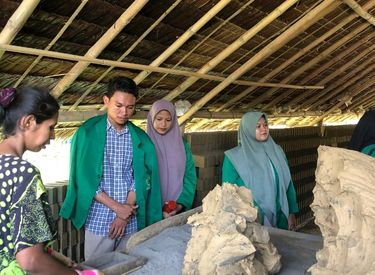
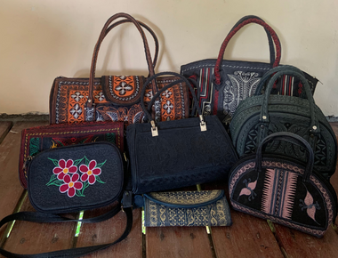
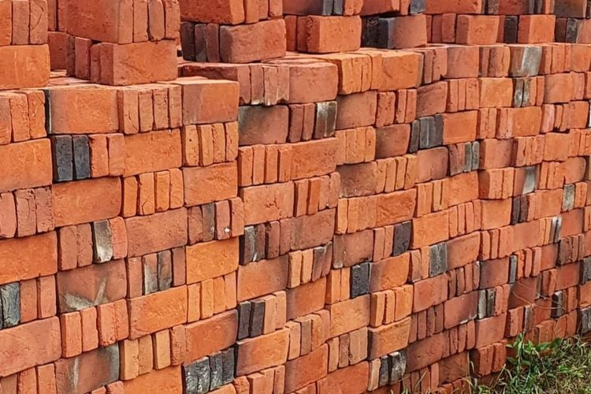
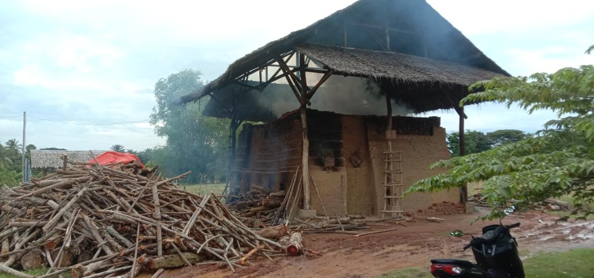
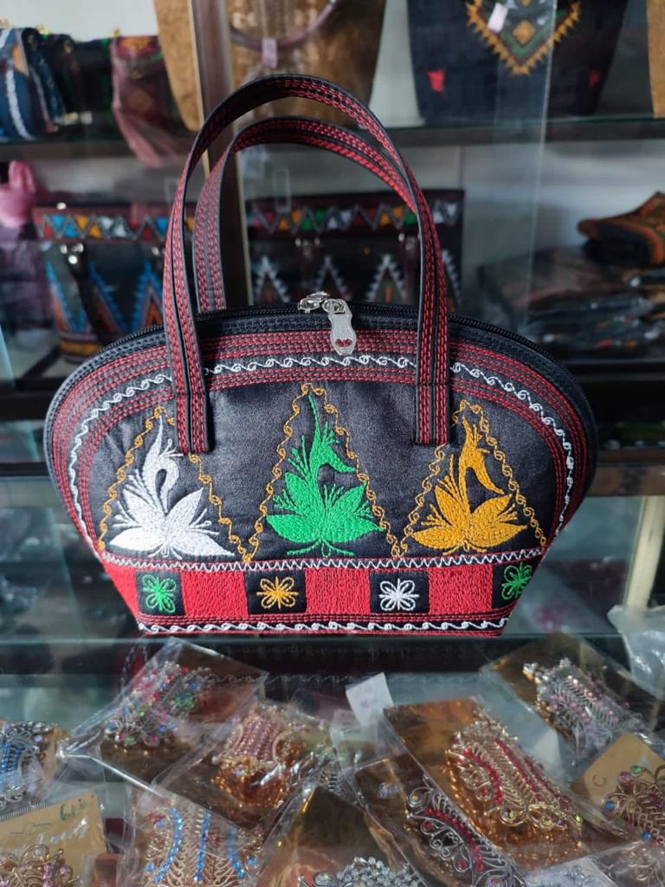
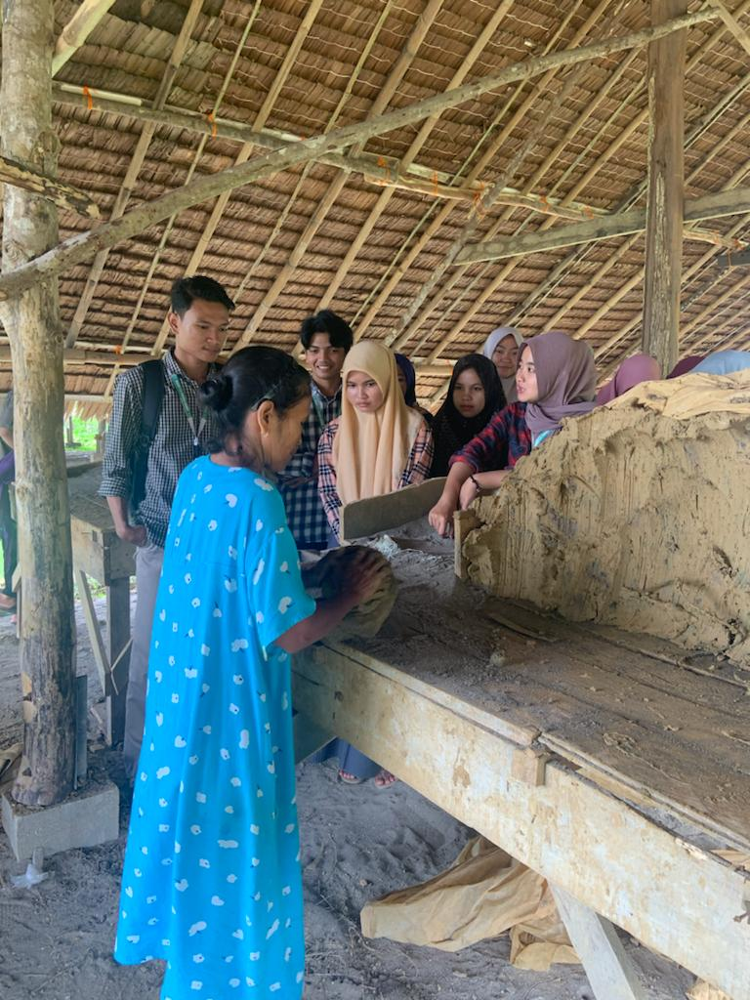
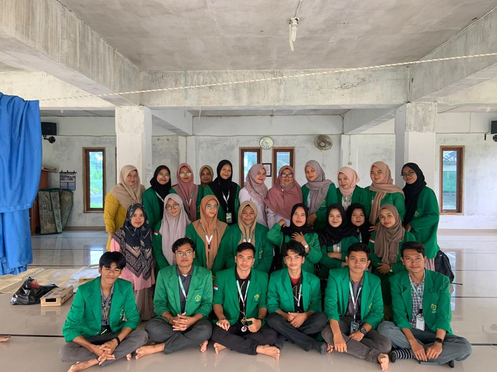
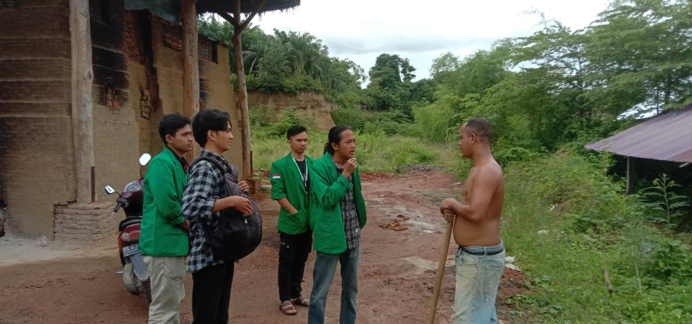

Usaha Mikro Menengah merupakan istilah umum dalam ekonomi yang merujuk kepada usaha ekonomi produktif yang dimiliki perorangan maupun badan usaha. Di desa Paloh Igeuh Terdapat 2 Pelaku UMKM yaitu UMKM Tas Kerawang dan UMKM Batu Bata Merah
Tentang Kami
Selamat Datang di Website UMKM Desa Paloh Igeuh
Website UMKM desa Paloh Igeuh adalah situs produk umkm gagasan dari mahasiswa KKNT 15 sebagai media untuk memudahkan masyarakat dalam menemukan produk-produk UMKM dan wujud nyata Mahasiswa KKNT dalam meningkatkan kemajuan dan perkembangan UMKM di Desa Paloh Igeuh

Popular UMKM
Produk UMKM Desa Paloh Igeuh
Berikut Merupakan Data Produk UMKM yang ada di Desa Paloh Igeuh

Tas Kerawang
Tas Kerawang aceh adalah adalah tas yang berasal dari Aceh dengan Motif Ukiran Pintu Aceh dengan berbagai paduan warna
Mulai dari harga
Rp. 50.000
/ per pcs

Batu Bata Merah
Batu Bata merupakan salah satu bahan material sebagai bahan konstuksi, Batu bata terbuat dari tanah liat yang dibakar sampai warna kemerah-merahan
Mulai dari harga
Rp. 470
/ per pcs
UMKM
UMKM Paloh Igeuh
Dokumentasi terkait UMKM yang ada di desa Palog Igeuh





TENTANG KAMI
KKN TEMATIK-15 DESA PALOH IGEUH
Universitas Malikussaleh menyelenggarakan Progarm Kuliah Kerja Nyata yang salah satunya dengan metode Kuliah Kerja Nyata Tematik
yang ditujukan untuk menumbuh kembangkan jiwa empati dan kepeduliannya atas permasalahan-permasahalan yang terjadi di masyarakat,
mencerdaskan kehidupan bangsa, dan mewujudkan kesejahteraan masyarakat. Untuk konsepnya sendiri, Kuliah Kerja Nyata Tematik ini
berfokus pada Tata Kelola Desa Paloh Igeuh. Bertepatan dengan hal itu, kami melaksanakan kegiatan KKNT di Desa Paloh Igeuh.